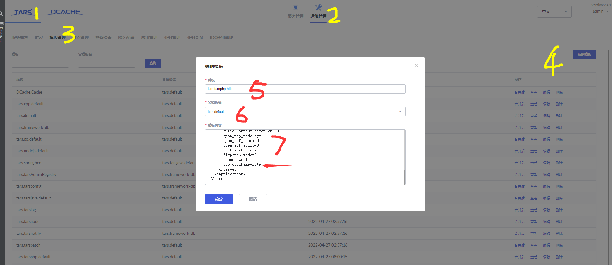

tars
docker下搭建指引
https://tarscloud.github.io/TarsDocs_en/installation/docker.html
使用手册
https://doc.tarsyun.com/
docker-compose 把框架搭建起来
概要说明:
tarscloud/framework:v{x.y.y} 部署一主, 多从
tarscloud/framework:v{x.y.y} 以--net=host 的方式启动, 即和宿主机相同网络
节点应用服务器使用 tarscloud/tars-node:latest, 也以--net=host 方式启动
tarscloud/tars-node 有多个不同的标签如下:
tarscloud/tars-node:stable, tarscloud/tars-node:latest, tarscloud/tars-node:full, 全环境, 即 jdk, php, nodejs 的运行时环境都已经安装
tarscloud/tars-node:cpp, 跑 cpp/go 服务
tarscloud/tars-node:java, 安装了 jdk
tarscloud/tars-node:nodejs, 安装了 nodejs
tarscloud/tars-node:php, 安装了 php
# 指定compose文件并项目名字，默认是文件夹目录名字
$ docker-compose -f docker-compose-tars.yml -p tars up -d
# 把所需要的服务都写到compose文件里
$ vim /f/www/dokcer-compose-tars.yml
version: "3"
services:
mysql:
image: mysql:5.6
container_name: tars-mysql
ports:
- "3307:3306"
restart: always
environment:
MYSQL_ROOT_PASSWORD: "123456"
volumes:
- ./data/tars_mysql:/var/lib/mysql:rw
# - ./source/Shanghai:/etc/localtime
networks:
internal:
ipv4_address: 172.27.1.2
framework:
image: tarscloud/framework:v2.4.14
container_name: tars-framework
ports:
- "3000:3000"
restart: always
networks:
internal:
ipv4_address: 172.27.1.3
environment:
MYSQL_HOST: "172.27.1.2"
MYSQL_ROOT_PASSWORD: "123456"
MYSQL_USER: "root"
MYSQL_PORT: 3307
REBUILD: "false"
INET: eth0
SLAVE: "false"
volumes:
- ./data/tars_framework:/data/tars:rw
# - ./source/Shanghai:/etc/localtime
depends_on:
- mysql
node:
image: tarscloud/tars-node:latest
container_name: tars-node
restart: always
networks:
internal:
ipv4_address: 172.27.1.5
volumes:
- ./data/tars_node:/data/tars:rw
# - ./source/Shanghai:/etc/localtime
environment:
INET: eth0
WEB_HOST: http://172.27.1.3:3000
ports:
- "9000-9010:9000-9010"
depends_on:
- framework
networks:
internal:
driver: bridge
ipam:
config:
- subnet: 172.27.1.0/16
PHP-HTTP-SERVER
目录结构
├─ tars-php-hello-world 弄一个hello world的demo
│ ├─ scripts 存储业务所需要的脚本
│ │ └─ tars2php.sh 负责的就是根据tars文件,生成客户端所需要的代码
│ ├─ src 业务逻辑所在的目录
│ │ ├─ component 存储Controller的基础类,方便所有的Controller公用
│ │ ├─ conf 业务需要的配置, 如果从平台下发配置,默认也会写入到这个文件夹中
│ │ ├─ controller MVC模型中的C层
│ │ ├─ servant 使用tars2php生成的client端的代码
│ │ ├─ composer.json 说明项目的依赖情况
│ │ ├─ index.php 整个服务的入口文件可自定义,但是必须要更改平台上的私有模板,增加entrance字段在server下面
│ │ └─ services.php 声明整个项目的基础namespaceName
│ └─ tars
│ │ ├─ example.tars 这个tcp服务所依赖
│ │ ├─ hello.proto.php 这个tcp服务所依赖
│ │ └─ tars.client.proto.php 生成servant下代码所必须的
开发
部署
- 添加模板
由于我们当前的是http服务，所以需要指定tars模板为
protocolName=http,复制tars.tarsphp.default然后再server标签的最尾部追加，其余内容不变
<tars>
<application>
...
<client>
...
</client>
<server>
...
protocolName=http //复制tars.tarsphp.default粘贴后只需要加这一距话在这里即可，其余不用动
</server>
</application>
</tars>

添加应用
应用名和服务名称,注意,这个与下文中tars文件夹中的tars.proto.php 需要完全一致
- 服务类型为tars_php
- 模板为刚刚建立的http服务模板,默认不启用set
- 可用端口,填写服务器内网ip
- 端口类型为TCP !!!!协议类型HTTP服务必须选择非TARS!!!!!!
- 线程数对应SWOOLE的进程数
- 最大连接数和队列最大长度、队列超时时间,对php服务不生效
- 完成代码开发后,在src目录下执行 composer run-script deploy 会自动进行代码打包